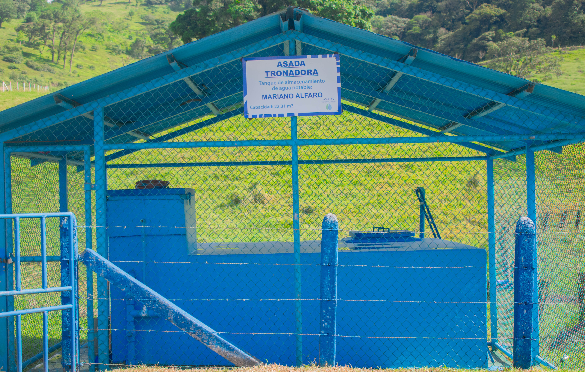
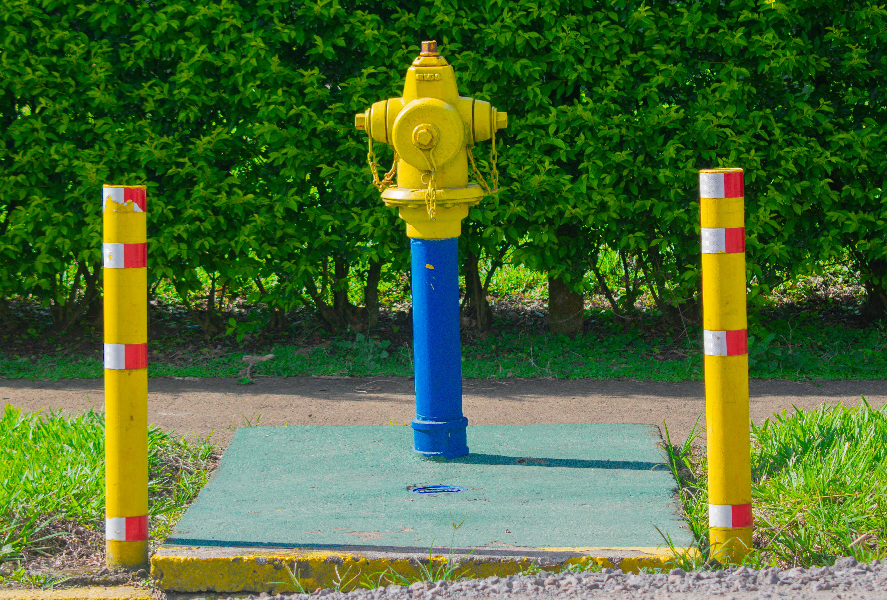
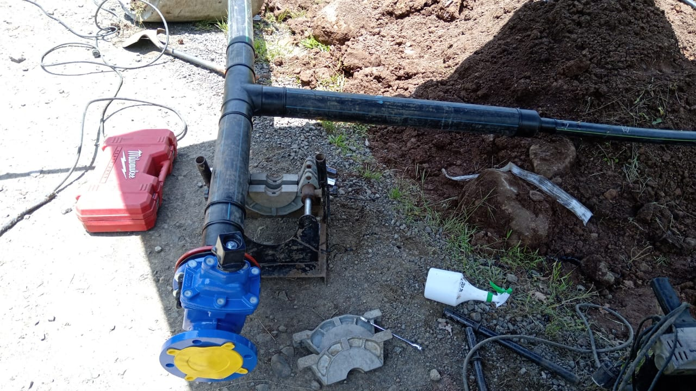
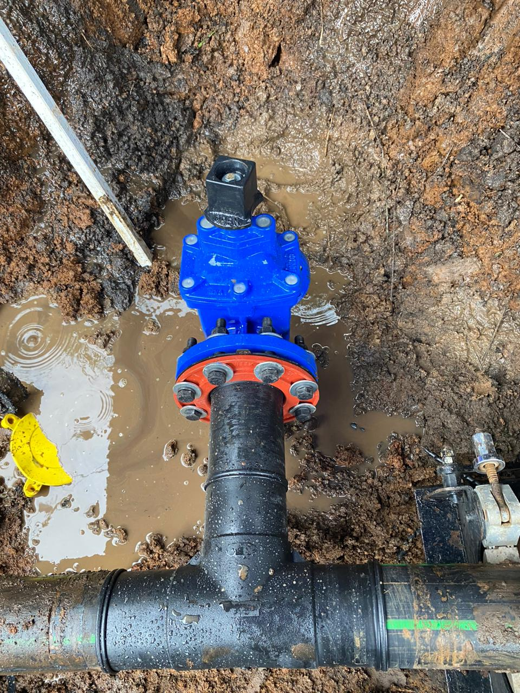
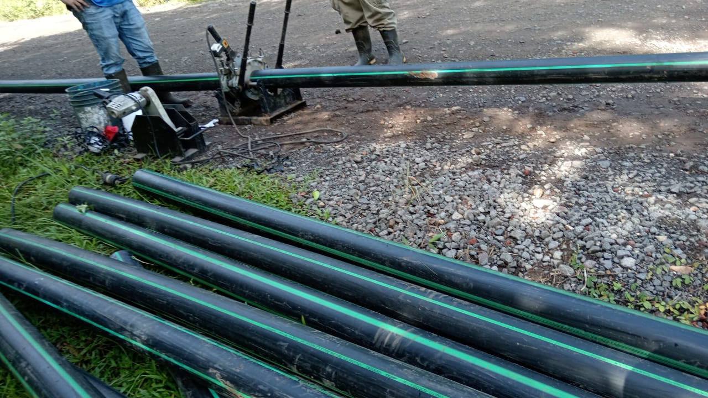

Agua potable
Brindamos el servicio de abastecimiento de agua potable a los usuarios de la comunidad de Tronadora.

ASADA TRONADORA
SERVICIOS

Brindamos el servicio de abastecimiento de agua potable a los usuarios de la comunidad de Tronadora.

Realizamos labores de mantenimiento para contribuir al buen funcionamiento del sistema de agua potable.

Administramos la información relacionada con los usuarios y el servicio de agua potable.

Brindamos atención a los usuarios para recibir consultas, solicitudes y reportes relacionados con el servicio.

Recibimos y atendemos reportes relacionados con problemas o interrupciones del servicio.
Promovemos el cuidado y uso responsable del agua como recurso fundamental para nuestra comunidad.

Brindamos información y orientación sobre las solicitudes de nuevas conexiones al sistema de agua potable.

Promovemos buenas prácticas para el ahorro, cuidado y aprovechamiento responsable del agua en nuestra comunidad.
Trabajamos para brindar un servicio responsable y contribuir al bienestar de la comunidad de Tronadora.